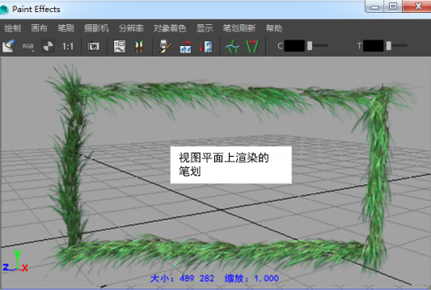
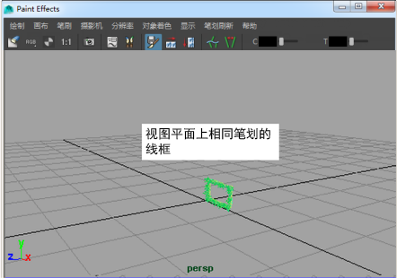

视图平面是法线正交于摄影机的平面。可以将在视图平面上绘制视为在面向并固定到摄影机的玻璃片上进行绘制。如果更改视图（例如，翻滚视图时），也会更改视图平面（玻璃片随摄影机移动）。
仅可以在场景绘制视图（而非场景视图）中的视图平面上进行绘制。在场景绘制视图中的视图平面上进行绘制时，每个笔划都会如预期一般地渲染在视图平面上。但是，各笔划的线框表示将显示在 XY 平面上，并位于世界空间中的 0 到 1 之间（靠近原点）。虽然笔划的线框表示似乎在该区域中产生重叠，但渲染笔划仍会显示在其绘制位置。


注： 当位于场景视图中时，在视图平面上进行绘制将产生异常结果。应改用 Paint Effects 面板在视图平面上绘制。
在视图平面上绘制
- 选择。
- 打开“Paint Effects”面板（），并切换到场景绘制视图（）。
提示： 通过选择，可将“Paint Effects”面板打开为单独的窗口。
- 在“内容浏览器”(Content Browser)（）中或工具架上，单击绘制时要使用的笔刷预设。
- 如有必要，请修改笔划设置（在“建模”(Modeling)菜单集中，选择“生成 > Paint Effects 工具”(Generate > Paint Effects Tool) >
 ）。有关修改笔划设置的信息，请参见 Paint Effects 工具选项。
）。有关修改笔划设置的信息，请参见 Paint Effects 工具选项。
- 如有必要，请修改笔刷属性（，或者使用 Ctrl-b（Linux 和 Windows）或 Control-b (Mac OS X) 热键组合）。有关修改笔刷属性的信息，请参见 Paint Effects 笔刷设置。
提示： 可在画布上使用热键，以便交互式地更改“热键编辑器”(Hotkey Editor)中“笔刷工具”(Brush Tools)下的“全局比例”(Global Scale)（设定 ModifyUpperRadius，默认热键：B）、仅“笔刷宽度”(Brush Width)（设定 ModifyLowerRadius）和“笔划偏移”(Stroke Offset)（设定 ModifyDisplacement，默认热键：M）。有关其他 Paint Effects 热键的信息，请参见准备使用 Paint Effects 中的使用默认 Paint Effects 热键。
- 若要绘制，请在整个平面中绘制笔划。
有关在场景绘制视图中进行工作的信息，请参见在曲面上自动绘制多个笔划。
注： 笔划渲染在视图平面上，但笔划的线框表示显示在 XY 平面上，并位于世界空间中的 0 到 1 之间。若要查看，请按键盘上的 Alt 键（Linux 和 Windows）或 Option 键 (Mac OS X)。